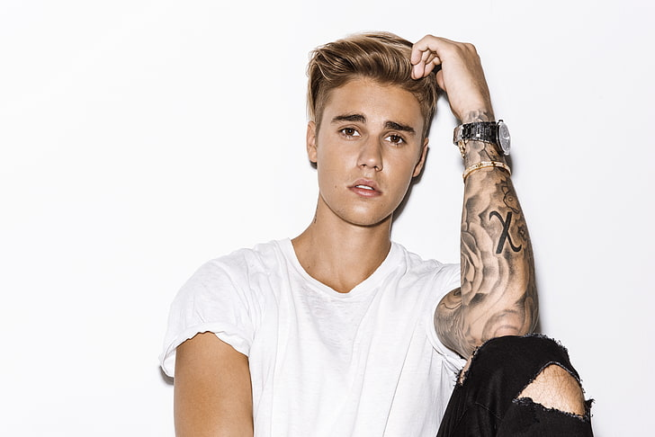

Justin Bieber
Canadian Singer

"Justien Bieber at his
2015
concert"
To know more about Bieber click here.
A tribute page for a Canadian Singer Justin Bieber
1994:
Born in
Canada
2008:
Discovered by a record executive
Scooter Braun.
2008:
Sign
with RBMG Records.
2009:
Establish himself as a
'Teen idol'.
2010:
March 19, releases
My World 2.0
2010:
Achieve commercial success from
My World 2.0
2011:
Releases second album
'Under the Mistletoe'.
2012:
Releases third album
'Believe'.
2013:
Involves in varius
legal issue.
2014:
Get drastic impact on his public image.
2015:
Releases fourth album
'Purpose'.
2016:
Diversifies on numerous collaborations.
2017:
Releases spanish song
Despacito.
2019:
Releases
'I Don't care'
with
Ed Sheeran.
2020:
Announce his fifth album
'Yummy'.
2021:
Having attracted over 86.1 million monthly listeners.
Present:
Focused on his work and continuing.